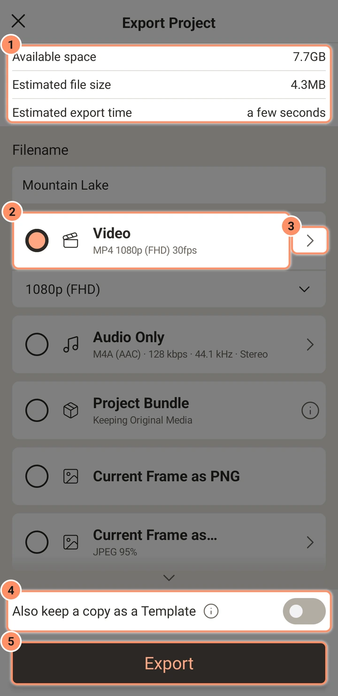
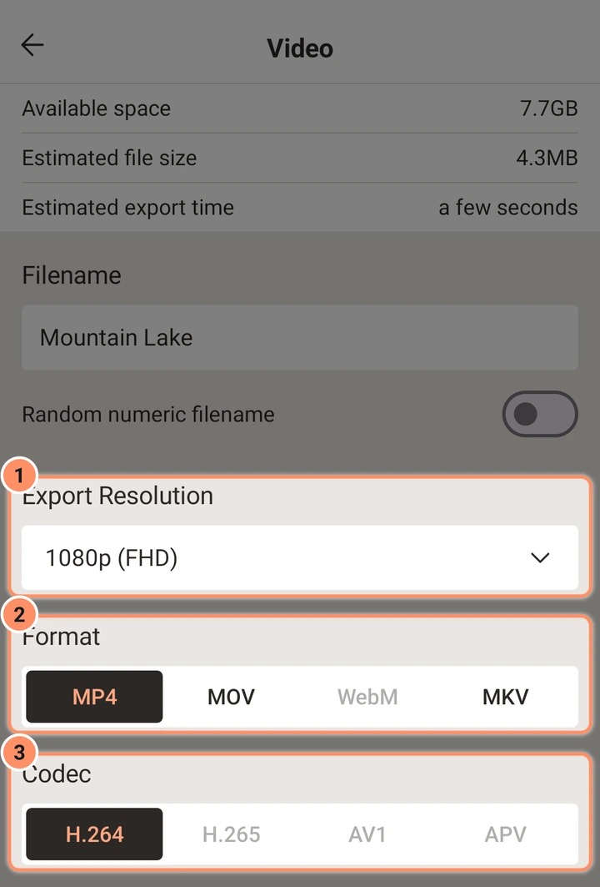
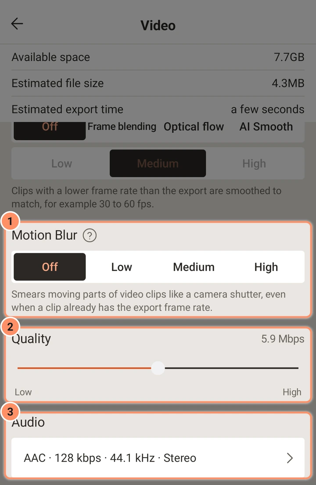

ایکسپورٹ
ہر ایکسپورٹ آپشن: ویڈیو فارمیٹس اور کوڈیکس، ریزولوشن، فریم ریٹ، GIF، تصویر سیکوئنس، آڈیو فائلیں، پروجیکٹ بنڈل، اور ایپ کی جانچ۔
اس صفحے پر
ایڈیٹر کی اوپر والی بار میں ایکسپورٹ اور شیئر (شیئر آئیکن) پر ٹیپ کریں، یا ہوم اسکرین پر پروجیکٹ کارڈ کے مینو میں ایکسپورٹ پر۔ اس اسکرین کا نام پروجیکٹ ایکسپورٹ کریں ہے۔
اسکرین
اوپر معلومات کی تین لائنیں: دستیاب جگہ، تخمینی فائل سائز اور ایکسپورٹ کا تخمینی وقت۔ ان کے نیچے فائل کا نام کا خانہ ہے، پھر ہر قسم کے ایکسپورٹ کے کارڈ ہیں؛ کسی کارڈ کو منتخب کرنے کے لیے اس پر ٹیپ کریں اور اس کے آپشن دیکھنے کے لیے اس کے تیر پر ٹیپ کریں۔ نیچے سوئچ ایک کاپی ٹیمپلیٹ کے طور پر بھی رکھیں اور بڑا ایکسپورٹ بٹن ہے۔

بٹن گرے ہو جاتا ہے اور وجہ لکھی آتی ہے جب ایکسپورٹ نہیں چل سکتا: کافی اسٹوریج نہیں یا اس فون پر سپورٹ نہیں۔ جو انتخاب یہ فون نہیں کر سکتا وہ مدھم ہوتا ہے، اور اس پر ٹیپ کرنے سے وجہ بتائی جاتی ہے۔ ایپ ہر قسم کی سیٹنگز یاد رکھتی ہے، سوائے یہ کہ ویڈیو ایکسپورٹ پروجیکٹ کے اپنے فریم ریٹ سے شروع ہوتی ہے۔
| کارڈ | نتیجہ | یہاں محفوظ ہوگا |
|---|---|---|
| ویڈیو | MP4، MOV، MKV یا WebM | Movies/AbsentMotion |
| صرف آڈیو | WAV، FLAC، M4A، OGG یا MP3 | Music/AbsentMotion |
| پروجیکٹ بنڈل | پروجیکٹ اور اس کے میڈیا کے ساتھ ایک .absproj فائل | Documents/AbsentMotion |
| موجودہ فریم بطور PNG | پلے ہیڈ پر فریم کی ایک PNG تصویر | Pictures/AbsentMotion |
| موجودہ فریم بطور... | ایک تصویر: PNG، JPEG، WebP، WebP lossless یا BMP | Pictures/AbsentMotion |
| تصویر سیکوئنس | ہر فریم کے لیے ایک تصویر، ایک فولڈر میں | Pictures/AbsentMotion |
| GIF | ایک اینیمیٹڈ GIF | Pictures/AbsentMotion |
| XML | صرف پروجیکٹ فائل، دوسرے ٹولز کے لیے (صرف پروجیکٹ لسٹ سے) | Documents/AbsentMotion |
فائل کا نام کا خانہ پروجیکٹ کے نام سے شروع ہوتا ہے اور آپ اسے بدل سکتے ہیں؛ حروف، ہندسے اور یہ نشانات برقرار رہتے ہیں: اسپیس، ڈاٹ، ڈیش، انڈر اسکور، کوما اور پلس۔ ویڈیو، موجودہ فریم، GIF اور تصویر سیکوئنس کے آپشنز میں سوئچ بےترتیب عددی فائل کا نام ہر ایکسپورٹ کو اس کی جگہ 16 ہندسوں کا بےترتیب نام دیتا ہے، اور تب خانہ "ایکسپورٹ پر بنایا جائے گا" دکھاتا ہے۔ فائلیں Android کی عام میڈیا اسٹوریج کے ذریعے محفوظ ہوتی ہیں، اس لیے دوسری ایپس اور گیلری انہیں دیکھ سکتی ہیں۔ اگر ایکسپورٹ ناکام ہو یا آپ منسوخ کریں تو آدھی لکھی فائل ہٹا دی جاتی ہے۔
ویڈیو
ایکسپورٹ ریزولوشن۔ 2160p (4k)، 1440p (QHD)، 1080p (FHD)، 720p (HD)، 540p (SD)، 360p، 270p یا 180p۔ نمبر چھوٹا رخ ہے؛ لمبا رخ پروجیکٹ کی شکل کے مطابق ہوتا ہے۔ ڈیفالٹ سب سے بڑا سائز ہے جو پروجیکٹ کے اپنے سائز سے زیادہ نہ ہو۔ جو سائز آپ کے فون کا ویڈیو انکوڈر نہیں بنا سکتا وہ وجہ کے ساتھ مدھم ہوتا ہے۔
فارمیٹ اور کوڈیک۔ فارمیٹ فائل کی قسم ہے؛ کوڈیک بتاتا ہے کہ تصویر کو کیسے کمپریس کیا جاتا ہے۔
| فارمیٹ | کوڈیکس |
|---|---|
| MP4 | H.264، H.265، AV1، APV |
| MOV | H.264، H.265 |
| WebM | VP9، AV1 |
| MKV | H.264، H.265، AV1، VP9 |
کوئی کوڈیک صرف اسی صورت پیش کیا جاتا ہے جب آپ کے فون میں اس کا انکوڈر ہو (مثلاً “اس فون میں AV1 انکوڈر نہیں ہے۔”)۔ H.264 ڈیفالٹ ہے اور ہر جگہ چلتا ہے۔ H.265 اسی کوالٹی پر چھوٹی فائلیں بناتا ہے مگر کچھ پرانے پلیئر اسے نہیں کھول سکتے۔ AV1، VP9 اور APV فون پر منحصر ہیں۔ فارمیٹ بدلنے سے کوڈیک برقرار رہتا ہے اگر وہ فٹ ہو، ورنہ ایپ ایسا کوڈیک چنتی ہے جو فٹ ہو۔

فریم ریٹ۔ ایک سلائیڈر جس کے اسٹاپ 10، 15، 24، 25، 30، 48، 50 اور 60 fps پر ہیں، نیز پروجیکٹ کا اپنا فریم ریٹ۔ ڈیفالٹ پروجیکٹ کا فریم ریٹ ہے۔
فریم انٹرپولیشن۔ ایک طریقہ چنیں، پھر لیول، ایک مدد بٹن کے ساتھ جو ہر ایک کی وضاحت کرتا ہے اور بتاتا ہے کہ آپ کا فون اسے کتنی اچھی طرح سنبھالے گا۔ یہ اہم ہے جب ویڈیو کلپ کا فریم ریٹ ایکسپورٹ سے کم ہو، مثلاً 60 fps ایکسپورٹ میں 30 fps کلپ:
- بند: ہر کلپ اپنے فریم دکھاتا ہے۔ 60 fps ایکسپورٹ میں 30 fps کلپ ہر فریم دو بار دکھاتا ہے، اس لیے حرکت تھوڑی سی سیڑھی جیسی لگ سکتی ہے۔
- فریم بلینڈنگ: درمیانے نئے فریم قریب ترین فریموں کو ملا دیتے ہیں جیسے تیز کراس فیڈ۔ ایکسپورٹ تیز؛ تیز حرکت بھوت جیسی لگ سکتی ہے۔
- کم قریب ترین اصلی فریم کی طرف جھکتا ہے، اس لیے بھوت پن کم ہوتا ہے۔
- میڈیم دو قریب ترین فریموں کو برابر ملا دیتا ہے۔
- ہائی چار فریم ملا کر سب سے نرم حرکت دیتا ہے؛ یہ کلپ کے اپنے فریموں کو بھی تھوڑا نرم کرتا ہے تاکہ تصویر تیز اور نرم کے درمیان دھڑکے نہیں۔
- آپٹیکل فلو: ایپ دیکھتی ہے کہ تصویر کا ہر حصہ کیسے حرکت کرتا ہے اور اصلی درمیانی فریم بناتی ہے۔ سب سے ہموار حرکت، مگر ایکسپورٹ سست اور بہت تیز حرکت کناروں پر دھندلی ہو سکتی ہے۔
- کم حرکت کو تقریباً فالو کرتا ہے اور سب سے تیز ہے۔
- میڈیم متوازن انتخاب ہے۔
- ہائی حرکت کو سب سے قریب سے فالو کرتا ہے، صاف ترین درمیانی فریموں کے لیے، اور سب سے زیادہ وقت لیتا ہے۔
- AI Smooth: ایک AI ماڈل درمیانی فریم بناتا ہے۔ یہ تیز حرکت اور غائب یا ظاہر ہونے والے کناروں کو آپٹیکل فلو سے بہتر سنبھالتا ہے، مگر بہت سست ہے۔ ہر لیول کے لیے تقریباً 11 MB کی ایک بار ڈاؤن لوڈ درکار ہے؛ کسی لیول کے ساتھ پہلا ایکسپورٹ ڈاؤن لوڈ سے پہلے پوچھتا ہے، اور اسکرین دکھاتی ہے کہ اس فون پر کتنا اضافی وقت لگے گا۔
- کم ہلکا ماڈل استعمال کرتا ہے اور اچھے فونز کے لیے موزوں ہے۔
- میڈیم وہ ماڈل ہے جس سے شروع کرنا چاہیے۔
- ہائی مشکل ترین مناظر کے لیے بڑا ماڈل استعمال کرتا ہے؛ اسے تیز فونز یا مختصر کلپس کے لیے رکھیں۔
یہ صرف ان ویڈیو کلپس پر اثر کرتا ہے جن کا فریم ریٹ (کلپ کی اسپیڈ گن کر) ایکسپورٹ سے کم ہو۔ شکلیں، ٹیکسٹ اور ایفیکٹس ہر ایکسپورٹ فریم پر ہمیشہ بنائے جاتے ہیں۔ یہ GIF اور تصویر سیکوئنس کے لیے بھی دستیاب ہے۔ لائیو پری ویو اسے کبھی استعمال نہیں کرتا؛ پری ویو میں ہموار فریم دیکھنے کے لیے کلپ پر اسموتھ استعمال کریں (دیکھیں فوٹوز، ویڈیو اور اسپیڈ)۔
موشن بلر۔ بند، کم، میڈیم یا ہائی۔ یہ ویڈیو کلپس کے متحرک حصوں کو کیمرہ شٹر کی طرح دھندلا کرتا ہے جو زیادہ دیر کھلا رہتا ہے (ایک چوتھائی، آدھا یا پورا فریم)۔ فریم انٹرپولیشن کے برعکس یہ تب بھی مدد کرتا ہے جب کلپ میں پہلے سے ایکسپورٹ کا فریم ریٹ ہو: تیز پین اور تیز حرکت زیادہ ہموار اور کم جھٹکے والی لگتی ہے۔ یہ صرف ویڈیو کلپس بدلتا ہے، کبھی شکلیں یا ٹیکسٹ نہیں (ان کے لیے موشن بلر ایفیکٹ استعمال کریں)۔
کوالٹی۔ کم سے ہائی تک سلائیڈر جو نتیجے کا بٹ ریٹ دکھاتا ہے (مثلاً “5.9 Mbps”)۔ بٹ ریٹ تصویر کے سائز، فریم ریٹ اور کوڈیک کے مطابق ہوتا ہے: H.265 اور AV1 کو H.264 سے کم درکار ہوتا ہے اسی شکل کے لیے۔ فون کا انکوڈر اسے تھوڑا ایڈجسٹ کر سکتا ہے۔
آڈیو۔ “AAC · 128 kbps · 44.1 kHz · اسٹیریو” جیسی قطار ویڈیو کی آڈیو سیٹنگز کھولتی ہے:

- کوڈیک: AAC (MP4، MOV، MKV) یا Opus (WebM، MKV)۔ دوسرا وجہ کے ساتھ مدھم ہے۔
- بٹ ریٹ: 64، 96، 128 (ڈیفالٹ)، 160، 192، 256 یا 320 kbps۔
- سیمپل ریٹ: 44.1 kHz (ڈیفالٹ) یا 48 kHz۔ Opus ہمیشہ 48 kHz استعمال کرتا ہے۔
- چینلز: اسٹیریو (ڈیفالٹ) یا مونو۔
بغیر آواز والا پروجیکٹ بغیر آڈیو ٹریک کی ویڈیو بناتا ہے۔
رنگ۔ ویڈیوز معیاری 8-bit SDR ویڈیو (BT.709) کے طور پر ایکسپورٹ ہوتی ہیں۔ HDR ایکسپورٹ نہیں ہے۔ آپ کی درآمد کردہ HDR ویڈیوز معیاری رنگوں میں بدل دی جاتی ہیں۔
شفافیت۔ ویڈیو فائلوں میں شفافیت نہیں ہوتی۔ پروجیکٹ کے شفاف حصے کالے نکلتے ہیں۔
انتباہات
جب فون میں آپ کے انتخاب کے لیے صرف سافٹ ویئر انکوڈر ہو، یا اس کا ہارڈ ویئر انکوڈر آپ کے فریم ریٹ سے سست درجہ بند ہو، تو کارڈ پر سست ایکسپورٹ لکھا آتا ہے اور پھر بھی جاری رکھیں اور تجویز مثلاً Use H.264 · 1080p پیش کرتا ہے۔ اگر سیٹنگز بالکل ایکسپورٹ نہ ہو سکیں تو کارڈ پر غیر معاون لکھا آتا ہے، ساتھ ایسی سیٹنگز پر جانے کا بٹن جو کام کریں۔

صرف آڈیو
- فارمیٹ: WAV 16-bit، WAV 24-bit، FLAC، M4A (AAC، ڈیفالٹ)، OGG (Opus) یا MP3۔ WAV اور MP3 ہر فون پر چلتے ہیں؛ باقیوں کے لیے فون میں انکوڈر درکار ہے۔
- بٹ ریٹ: M4A، OGG اور MP3 کے لیے 64 سے 320 kbps۔ WAV اور FLAC lossless ہیں اور ان کا کوئی نہیں۔
- سیمپل ریٹ: 44.1 یا 48 kHz (OGG ہمیشہ 48 kHz)۔ چینلز: اسٹیریو یا مونو۔
فائل پورے پروجیکٹ کی لمبائی کی ہوتی ہے اور ہر سنائی دینے والے کلپ کے مکس پر مشتمل ہوتی ہے، اس کے والیوم، ایفیکٹس اور لیمیٹر کے ساتھ۔ اگر سننے کے لیے کچھ نہ ہو تو کارڈ “اس پروجیکٹ میں آواز نہیں” کے ساتھ مدھم ہوتا ہے۔
GIF
انتخاب: شفاف حصے بن جائیں سفید (ڈیفالٹ) یا سیاہ، سائز (720p، 540p، 360p بطور ڈیفالٹ، 270p، 180p)، فریم ریٹ (5، 10، 12، 15 بطور ڈیفالٹ، 20، 25، 30) اور فریم انٹرپولیشن۔ GIF میں فی فریم 256 رنگ ہوتے ہیں اور یہ ہمیشہ لوپ ہوتا ہے۔ GIF کی ٹائمنگ سیکنڈ کے سوویں حصے میں ہوتی ہے، اس لیے 30 fps صرف تقریباً ہوتا ہے۔ تخمینی سائز چند نمونہ فریم انکوڈ کر کے ناپا جاتا ہے۔
تصویر سیکوئنس
ہر فریم کے لیے ایک تصویر، فائل کا نام کے نام والے فولڈر (پروجیکٹ کا نام، جب تک آپ اسے نہ بدلیں) میں frame_00001.png، frame_00002.png وغیرہ کے طور پر محفوظ ہوتی ہے۔ انتخاب: فارمیٹ (PNG، JPEG، WebP، WebP lossless، BMP)، کوالٹی (50 %، 70 %، 85 %، 95 % بطور ڈیفالٹ، 100 %، JPEG اور WebP کے لیے)، شفاف حصے بن جائیں (سفید یا سیاہ، صرف JPEG اور BMP کے لیے)، ریزولوشن، فریم ریٹ (10 سے 60) اور فریم انٹرپولیشن۔ PNG اور WebP lossless شفافیت رکھتے ہیں۔
موجودہ فریم
موجودہ فریم بطور PNG پلے ہیڈ پر فریم کو پورے پروجیکٹ سائز پر شفافیت کے ساتھ محفوظ کرتا ہے۔ موجودہ فریم بطور... ایک فارمیٹ (PNG، JPEG بطور ڈیفالٹ، WebP، WebP lossless، BMP)، JPEG اور WebP کے لیے کوالٹی (95 % بطور ڈیفالٹ) اور یہ کہ شفاف حصے کیا بنیں، شامل کرتا ہے۔ پروجیکٹ لسٹ سے پہلا فریم استعمال ہوتا ہے۔
پروجیکٹ بنڈل اور XML
- پروجیکٹ بنڈل ایک
.absprojفائل بناتا ہے جس میں پروجیکٹ اور اس کا استعمال کردہ اصل میڈیا ہوتا ہے۔ اسے بیک اپ کے طور پر رکھیں یا پروجیکٹ کو دوسرے فون پر منتقل کریں: دیکھیں پروجیکٹس، بیک اپ اور درآمد۔ - XML صرف پروجیکٹ فائل محفوظ کرتا ہے، میڈیا کے بغیر۔ یہ صرف پروجیکٹ لسٹ سے پیش کیا جاتا ہے۔
ایکسپورٹ سے پہلے اور دوران جانچ
- اسٹوریج۔ ایپ کو تخمینی سائز کے علاوہ حفاظتی مارجن چاہیے۔ اگر یہ دستیاب جگہ سے زیادہ ہو تو یہ “کافی نہیں” کہتی ہے اور رک جاتی ہے؛ اگر 1 GB سے کم بچے گا تو “کم” کہتی ہے۔ اگر ایکسپورٹ کے دوران فون کی جگہ ختم ہو جائے تو ایکسپورٹ رک جاتی ہے اور ادھوری فائل ہٹا دی جاتی ہے۔
- تخمینے۔ سائز اور وقت کے تخمینے ایکسپورٹ کرتے ہوئے بہتر ہوتے جاتے ہیں: ایپ آپ کے پچھلے ایکسپورٹس سے سیکھتی ہے۔ اس سے پہلے، یہ پہلی بار اسٹارٹ پر جانچ سے ناپی گئی اسپیڈ استعمال کرتی ہے۔ وقت کا تخمینہ آپ کے پروجیکٹ کے چند فریم منتخب سائز پر بھی بناتا ہے (GIFs اور تصویر سیکوئنس کے لیے انہیں انکوڈ بھی کرتا ہے)، اس لیے بھاری ایفیکٹس جیسے VHS یا بلرز اور بڑی ویڈیوز اسے لمبا کر دیتے ہیں۔
- مصروف انکوڈر۔ اگر فون کا ہارڈ ویئر ویڈیو انکوڈر مصروف ہو (مثلاً کوئی دوسری ایپ اسے روکے ہو) یا سائز اور فریم ریٹ قبول نہ کرے، تو ایکسپورٹ پہلے اسے اپنی رفتار سے کام کرنے کو کہتی ہے، پھر سست سافٹ ویئر انکوڈر استعمال کرتی ہے اور چلتے ہوئے بتاتی ہے۔ صرف تب رکتی ہے جب ہر انکوڈر انکار کرے، “اس فون کا ویڈیو انکوڈر مصروف ہے یا یہ سائز نہیں بنا سکتا” کے ساتھ۔
- غائب میڈیا۔ اگر پروجیکٹ ایسی فائلیں استعمال کرتا ہے جو فون پر نہیں ہیں، تو ایپ پہلے ان کی فہرست دکھاتی ہے (“میڈیا غائب”)۔ پھر بھی ایکسپورٹ کریں ان لیئرز کو چھوڑ دیتا ہے۔
- گرمی۔ اگر فون گرم ہو جائے تو ایکسپورٹ جان بوجھ کر سست ہو جاتی ہے اور ہر فریم کے بعد تھوڑا رکتی ہے، اور ایک پیغام یہ بتاتا ہے۔ جب بہت زیادہ گرم ہو تو یہ ٹھنڈا ہونے تک فریموں کے درمیان رکتی ہے۔
- ایپ چھوڑنا۔ ویڈیو، آڈیو، GIF، تصویر سیکوئنس یا پروجیکٹ بنڈل کی ایکسپورٹ دوسری ایپ پر جانے پر بھی جاری رہتی ہے: ایک نوٹیفکیشن اس کی پیش رفت دکھاتا ہے اور اس میں منسوخ کریں بٹن ہوتا ہے، اور اگر آپ غیر موجودگی میں ایکسپورٹ مکمل ہو تو یہ بتا دیتی ہے۔ Android 13 اور نئے پر ایپ پہلی ایکسپورٹ پر ایک بار پوچھتی ہے کہ کیا نوٹیفکیشن دکھا سکتی ہے؛ اگر آپ نہ کہیں تو ایکسپورٹ پھر بھی جاری رہتی ہے، صرف نوٹیفکیشن نہیں دکھایا جاتا۔ AbsentMotion کو حالیہ ایپس کی فہرست سے بند کرنے پر ایکسپورٹ رک جاتی ہے۔ جب تک ایپ کھلی ہے اسکرین آن رہتی ہے۔ پاز کا کوئی بٹن نہیں؛ منسوخ کریں (یا بیک بٹن) ایکسپورٹ فوراً روکتا ہے اور ادھوری فائل حذف کر دیتا ہے۔
- بعد میں جانچ۔ مکمل ویڈیو اور آڈیو فائلیں دوبارہ کھول کر جانچی جاتی ہیں: ٹریکس موجود، لمبائی درست، پہلا اور آخری فریم پڑھنے کے قابل، اور درمیان سے ایک تصویر کا موازنہ کیا جاتا ہے کہ پروجیکٹ وہاں کیا دکھاتا ہے، تاکہ کالی یا جمی ہوئی ویڈیو پکڑی جائے۔ نتیجہ “جانچا گیا: درست چلتی ہے” کے طور پر دکھایا جاتا ہے۔ تصاویر اور GIFs کی بھی جانچ ہوتی ہے۔ اگر کچھ غلط ہو تو یہ بتاتی ہے کیا۔
جب مکمل ہو
اسٹوریج میں محفوظ ہو گیا اسکرین دکھاتی ہے کہ فائل کہاں ہے، اسے چلاتی ہے (یا تصویر یا تصاویر ایک ایک کر کے دکھاتی ہے؛ اگر فون ابھی ویڈیو نہیں چلا سکتا تو پہلا فریم اور ایک پلے بٹن دکھاتی ہے جو دوبارہ کوشش کرتا ہے)، اور Android کے شیئر شیٹ سے بھیجنے کے لیے ویڈیو شیئر کریں، GIF شیئر کریں، تصویر سیکوئنس شیئر کریں، تصویر شیئر کریں، آڈیو شیئر کریں یا پروجیکٹ XML شیئر کریں، اور ٹھیک ہے رکھتی ہے۔
ایک کاپی ٹیمپلیٹ کے طور پر رکھیں
سوئچ ایک کاپی ٹیمپلیٹ کے طور پر بھی رکھیں (ہر بار بند) کامیاب ایکسپورٹ کے بعد پروجیکٹ اور اس کے میڈیا کو ہوم اسکرین پر ٹیمپلیٹس کے تحت رکھتا ہے۔ دیکھیں ایسیٹس، ٹیمپلیٹس اور پریسیٹس۔